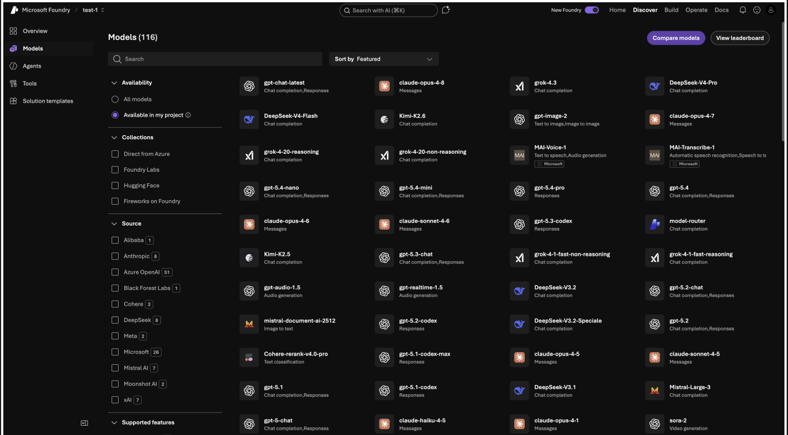
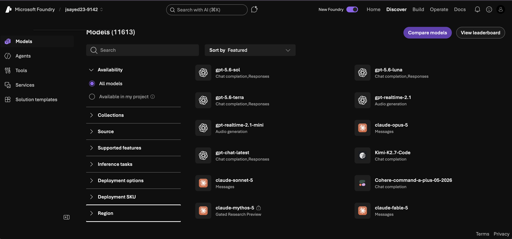

The Problem
11,000 models,
and nowhere to start.
Picture a developer who just wants to ship a feature this week. They open Microsoft Foundry, land on the Models page, and hit more than 11,000 models, each with different capabilities, pricing, context windows, and regional availability. Users kept telling us the same two things: help me narrow this list, and help me figure out where to start. Some picked a model only to hit a wall at deployment because it wasn't available in their region.
Our team of five spent three months redesigning model discovery and selection end to end. My focus was concept development, information architecture, and stakeholder communication, keeping the work aligned with the Microsoft CoreAI team. I came to the project from the research side, after running a UX research study on Foundry.


Toggle between the old catalog and the shipped redesign. Before: a dense multi-column grid where every model shows little more than a name and a task, with no way to narrow by region, so a developer could commit to a model and only hit a wall at deployment. After: Region is promoted into the filter rail as a first-class way to narrow the catalog, in a cleaner, more scannable layout, with Compare a click away.
My Contribution
Five designers, three months.
Here's the part that was mine.
On a team of five, the honest answer to “which pixels were yours” matters. I owned the research that started the project and the two threads that shipped: how developers narrow the catalog, and how they compare what's left.
What I owned Mine
- The UX research study on Foundry that surfaced the region and “where do I start” problems, and seeded the redesign
- Filtering & region IA: promoting region and pricing out of the model detail and into the results and filter rail
- The compare-tray concept and interaction model, from empty state to the best-value-per-row call-out
- Stakeholder communication with the Microsoft CoreAI team that carried these into the live product
Where the team led Ours
- The overall Discover information architecture and the four-task front door
- The Home / return experience and quick-task shortcuts
- The shared visual system and component work across the redesign
- Round-one wireframe testing we ran and synthesized together
User Research
Developer interviews shaped
our direction.
With no access to Microsoft's internal data, we ran our own study: a heuristic evaluation of the live platform, moderated developer interviews, and a card sort.
- Unclear terminology
- Dense information structure
- High cognitive load
- Lack of onboarding support
- Comparing models meant too much clicking back and forth
- Lost their place navigating a large catalog
- Users needed key model details earlier in the flow
- Explored how users group and organize information
- Revealed confusion around similar model tasks
- Guided the creation of our information architecture
Personas
Research and stakeholder discussions led us to three personas. After aligning with Microsoft, Alex, a startup developer moving fast, became the primary persona we designed for.
“There are so many models… I just want to know which one to start with for my project.”
“I need to weigh cost and capability before I commit the team to a model.”
“I want to move fast without picking a model that creates problems down the road.”
Sketches & Wireframes
Sketching our way
out of the problem.
Before touching Figma, we sketched. Paper let us argue about structure instead of pixels, and it surfaced the two decisions the redesign would hinge on: where the region problem gets solved, and how a developer decides what to look at first.

Paper prototype. Two ideas we carried forward: handling region up front so a developer never commits to a model they can't deploy, and a model-selection flow with an “ask AI to find the best model” helper and clearer descriptions to reduce overload.
The sketch notes set our direction. Three ideas carried from paper into the mid-fidelity wireframes:
Designing for the states that aren't the happy path
A catalog of 11,000 models is mostly edge cases. Three shaped the design as much as the main flow, each a decision with a real trade-off.
Three directions we killed
The shipped answer looks obvious in hindsight. It wasn't. Before region-in-filters and a compare tray, I explored three approaches that tested worse, and killing them is what made the final design defensible.
Mid-fidelity wireframes
With the structure settled, I moved into Figma to resolve layout and hierarchy. These mid-fidelity screens worked out where each decision lives; the high-fidelity, clickable prototype comes next.
Discover: a front door with intent
Instead of an 11,000-row wall, Discover opens with what you're trying to do: find, compare, try, or fine-tune a model.

Models: filter, region, and compare in one place
The core of the redesign: a filter rail narrows 11,000+ models, region and pricing sit right in the results, and a compare tray collects models for a side-by-side decision.

Home: pick up where you left off
Returning developers land on recent models and quick tasks, so a half-finished decision doesn't mean starting the search over.

High-Fidelity Prototype
The clickable, high-fidelity build.
Before it shipped, the redesign lived here: a full high-fidelity prototype, embedded and clickable. Explore Discover, the Models page, filtering, and side-by-side compare, then see the shipped solution next.
Interactive Walkthrough
Solution
Two ideas, now shipped.
Two ideas I drove shipped into Microsoft Foundry, and both are live in the product today. The first promoted Region into the filter rail, so developers narrow the catalog by where a model can actually deploy, before they commit rather than after they hit a wall. The second rebuilt compare from the ground up: the original was shallow and hard to act on.
Live in Microsoft Foundry · Discover › Models › CompareUser Testing · Round 2
Validating the high-fidelity
prototype.
An earlier round on the wireframes had already shaped the layout; this final round put the high-fidelity prototype in front of developers across the Home, Discover, and Models pages, testing three things: whether they could understand the interface, navigate to the right region, model, or task, and compare options to find the best fit.
What the sessions pointed to
Directional signals from a small, moderated round, enough to steer the design, not to claim statistical significance.
Results
The ideas that
are now shipping.
The redesign reframed discovery around the decisions developers make: narrowing, evaluating, and committing, instead of scrolling an 11,000-row list and hoping. After the co-op, both ideas shipped into the live product that every Foundry developer now uses to choose a model: region sits in the filter bar, and there's a compare-model tray.
Task-success is the design metric; the reason it mattered to Foundry is the funnel. A developer's journey is browse › select › deploy, and two things quietly leaked users out of it: picking a model that turned out to be unavailable in their region (a failed deploy, and a reason to leave), and stalling in evaluation because comparing meant opening models one at a time. Region-in-filters removes the first leak before it happens; compare shortens the second. Both are aimed at the number the platform actually cares about, models successfully deployed, not just time on task.
Also during this co-op
A second Foundry project: Agent Builder research.
The Models redesign wasn't the only work I shipped at Microsoft. In parallel, I ran the usability research for Foundry's Agent Builder. Eight of eight developers hit the same Severity-4 blocker, so I turned a deprioritized bug into a prioritized fix and five concrete design changes the team carried forward.
Takeaways